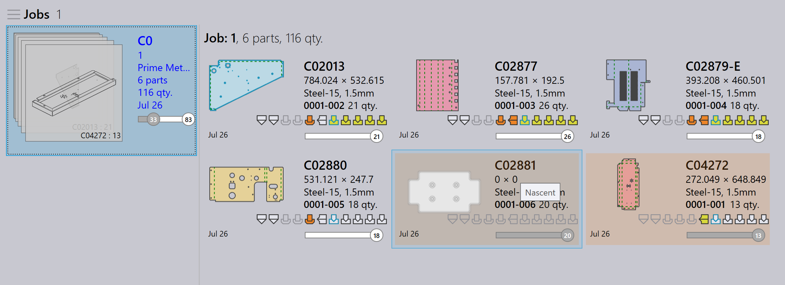

Import jobs
Import from csv or xlsx
You could also import jobs in common text formats
-
Click File → Open → Import Jobs, Open Folder dialog appears. Select
C:\Program Files\Metamation\Praxis\Samples\Jobs\C0\C0.csv.
-
If all Parts exists in the csv location or in lookup folder directories, new job window appears by listing all parts matching the csv fields.
-
Missing parts are ignored and not appears in the new job window.
-
Initially Part status is Nascent.

-
Click OK , now parts are imported in Part Library. CAD validation, tooling for bend and cut tooling instance done which can be monitored in the Pmonitor screen.

Create a blank part for the missing CAD files
When importing jobs using a spreadsheet (.csv or .xlsx), you may sometimes have rows referencing CAD files that are not available in the system.
-
To handle this, go to Factory → Settings → Job, under Spreadsheet import settings enable Create a blank part for the missing CAD files

When this option is selected:
-
If a CAD file is missing for any row during the job import, the system will automatically create a blank part in place of the missing CAD file.
-
In the new job window, these missing parts are visually highlighted in yellow to indicate that the associated CAD file is missing.

-
The missing part will still have its mapped fields (like part name, material, thickness, quantity, etc.) from the CSV. However, its part state will be shown as Nascent, meaning it is just an empty placeholder with no actual geometry yet.

This ensures that the job import can still proceed without errors due to missing CAD files — you can later update or replace the blank part with the correct CAD file when it becomes available.
Do not show the new job dialog if the spreadsheet has no error
factory → Settings → Job → Spreadsheet import settings→ Do not show the New Job dialog if the spreadsheet has no error
-
When this checkbox is selected, the system automatically creates the new job without showing the New Job dialog if the spreadsheet has no errors (no missing parts, missing dates, or invalid data).
-
When this checkbox is cleared, the New Job dialog always appears for user review and confirmation, even if the spreadsheet has no errors.
Prefer raw-material column over material + thickness
factory → Settings → Job→Prefer Raw-Material column over Material + Thickness
-
When this checkbox is selected, the system expects the spreadsheet to use the Raw-Material column (for example, Steel-20). This means the material type and thickness should be combined in a single value in one column.
-
When this checkbox is cleared, the system expects the spreadsheet to have separate columns for Material and Thickness (for example, Steel and 2.00). The system combines them internally during import.

Watch folder using CSV/XLSX
-
In factory → Settings→ Watch settings check on Enable 'Live Folder' and Watch sub-folders also.
-
Set the watch folder path (UNC or mapped drive).
-
In Spreadsheet import settings, check Import spreadsheet from 'Live Folder'.

-
Select Import Jobs from Spreadsheet Import options.
-
Copy
C:\Program Files\Metamation\Praxis\Samples\Jobs\C0\C0.csvand paste it into the Watch Folder. -
The system checks the CSV and tries to create the job automatically.
-
If the CAD file is missing, no job is created because the required CAD data is not found.
CAD lookup directory & recursive CAD search - not configured
-
In factory → Settings → Job → Spreadsheet import settings, if no CAD lookup directories is set and Use recursive CAD search is not used, the system does not search for CAD files automatically.
-
If Create a blank part for the missing CAD files checkbox is selected, the job will still be created even when CAD files are missing.
-
In this case, all parts in the job will be created as nascent (blank) parts — meaning they have no geometry because the CAD files could not be found.

CAD lookup directory & recursive CAD search - configured
When CAD lookup directories is set to (C:\Program Files\Metamation\Praxis\Samples) and Use recursive CAD search is enabled under factory → Settings → Job → Spreadsheet import settings:
-
The system automatically searches the specified folder and all its subfolders for the required CAD files mentioned in the spreadsheet.
-
Create a blank part for the missing CAD files is also enabled, so if any CAD file is still not found, the system will create a blank part as a placeholder.